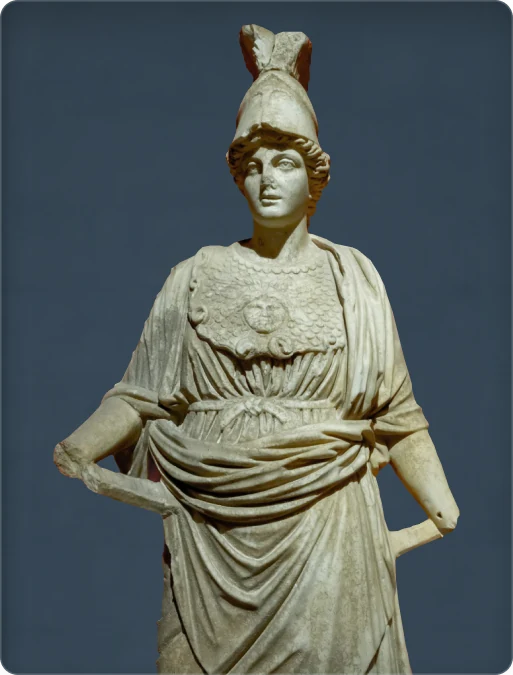

Athena

Athena’s helmet and aegis identify the goddess
The helmet and aegis bearing a Gorgon’s head identify Athena. The scales of this protective garment contrast with the folds gathered at her waist. The photographed sculpture matches the Athena from Perge in Antalya Museum. It is a Roman-period work depicting the Greek goddess.
Roman period · marble · from Perge · Antalya Museum, Türkiye
Reference views: Athena from Perge →
Photo credit
Photo: Yusuf Dündar / Unsplash
Recognising the figure by her attributes
Start with the outline of the helmet, then look down to the aegis, the protective garment across the figure’s chest. The Gorgon’s head forms a small motif at the centre of the aegis. Look first at the face of the goddess and then at the Gorgon’s face. The change in scale helps you pick out the second face. Together, the helmet and aegis give more specific clues to Athena’s identity than her facial features alone.
Comparing scales and folds
Across the chest, the scales repeat a similar shape within a small area. At the waist, the folds are longer and change direction. Try following a row of scales with your eyes, then trace one of the folds in the garment. The first path takes you over small, closely spaced reliefs. The second leads your eyes farther across the body. The difference in rhythm helps separate the two parts of the clothing, even though the protective garment and the gathered fabric are both carved in marble.
Taking in the whole figure
After looking closely at the chest, return to the whole figure. The helmet and the Gorgon’s head draw attention towards the central axis of the figure. Lower down, the folds at the waist and the directions of the arms widen the composition. You can also start with the outline of the clothing and work upwards towards the face. Looking at the photograph in both directions helps place the individual attributes on the figure and gives you a clearer sense of how the drapery guides your eye around the sculpture.
Placing the work and its subject
The entry describes a Roman-period work depicting a Greek goddess. The figure in the photograph matches the Athena from Perge in Antalya Museum. These details answer different questions. The helmet and aegis help identify the subject, while Perge tells you where the work came from and Antalya where it is kept. In the reference views, look again for the helmet, the Gorgon’s head and the folds at the waist. Finding them helps you see which details make the comparison possible.